3daysofdesign Visual Identity
In 2024, the Danish architecture studio BIG was selected to design the graphic identity for the Scandinavian design festival 3daysofdesign. I had the opportunity to lead the project as Head of Graphic Design, working closely with the team to bring the concept to life.
The theme ‘Dare to Dream’ resonated for us as a call to embrace the many possibilities within the realm of design. For us it means to inspire and be inspired, and it somehow also encapsulates the optimistic belief that through imagination, anything is possible.
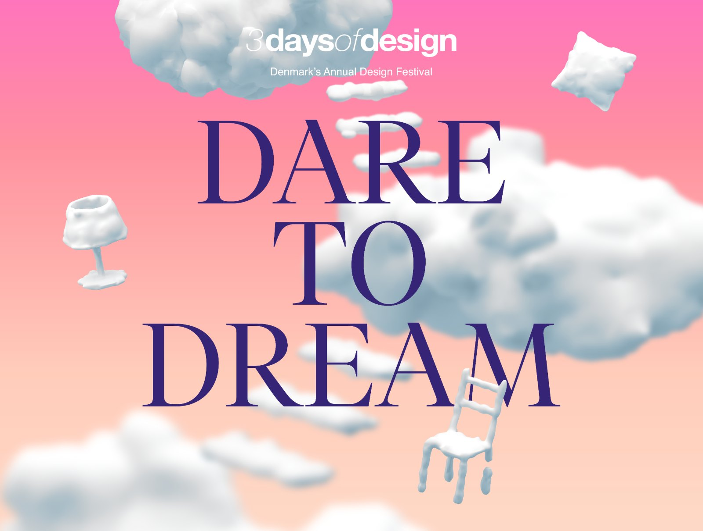
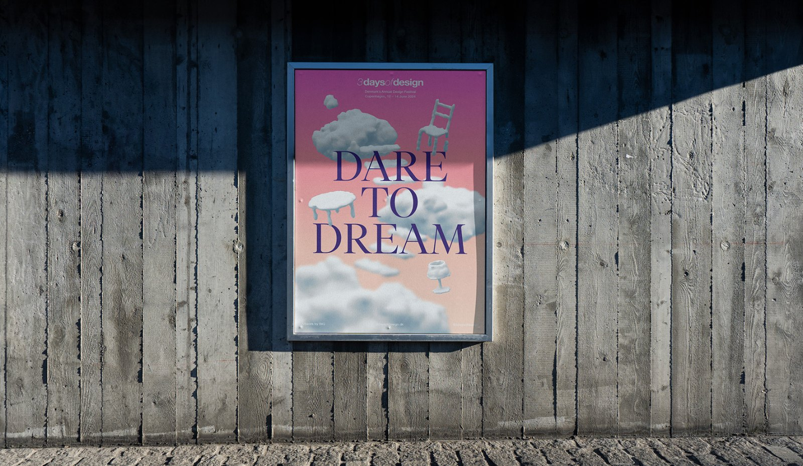
For the graphic style we chose to go for something that hadn’t been done before, in this case: a 3D modelled rendering with heavy video-game vibes, that we’ve used before for some of our projects at BIG.
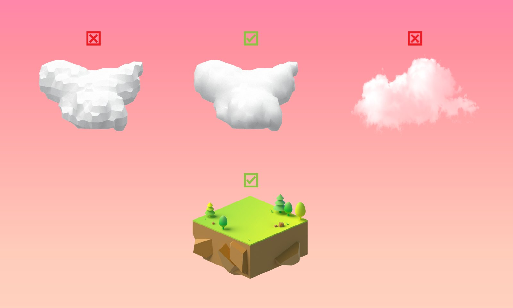
Then, we decided to put the cloud as the protagonist of the illustration, because it symbolizes dreams and aspirations. And next, we thought, why not create multiple clouds, in this case three, to represent each day of the festival.
And finally we connected them by stairs, also crafted from clouds. These represent the journey and progress in turning dreams into reality… and by linking these clouds, we wanted to make an emphasis on the collaborative nature of the creative process.
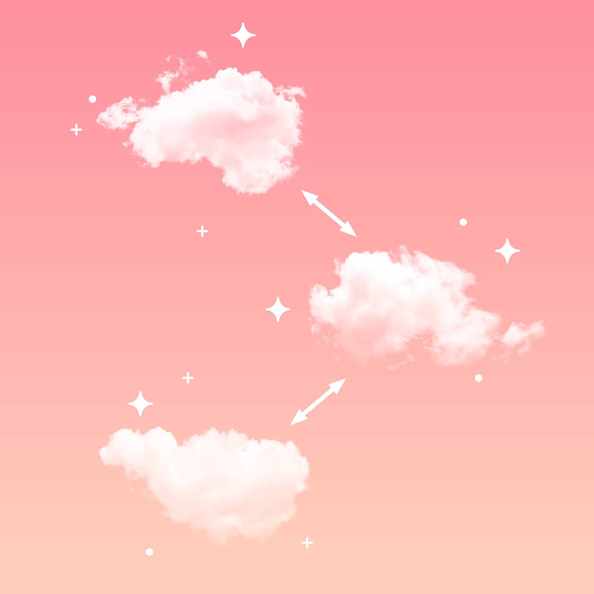
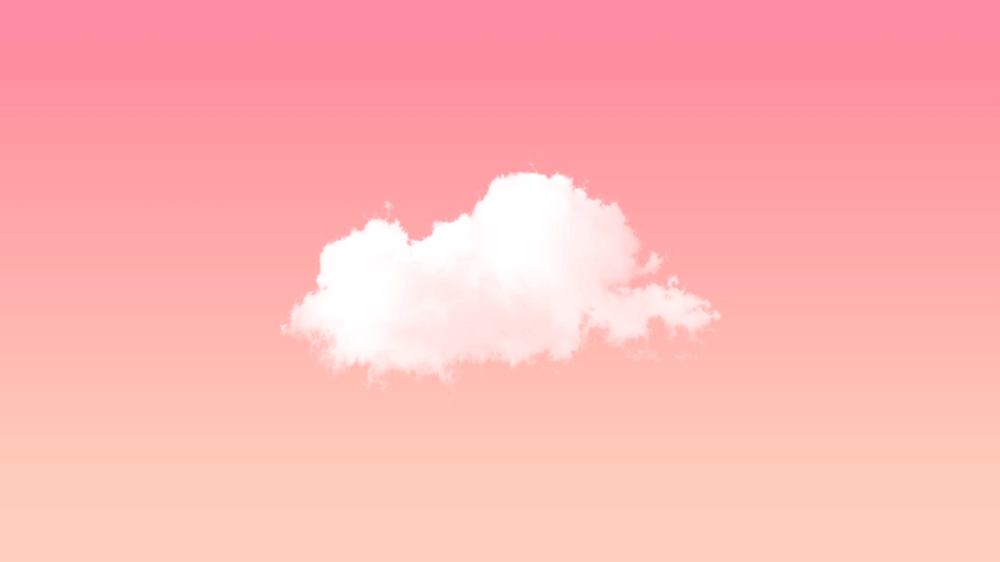
We came up with the last bit and my favorite part of the illustration. We decided to add clouds of furniture orbiting around, drawing inspiration from the classic childhood game of recognizing shapes in the sky. This way we infused a sense of imaginative exploration into the overall visual narrative.
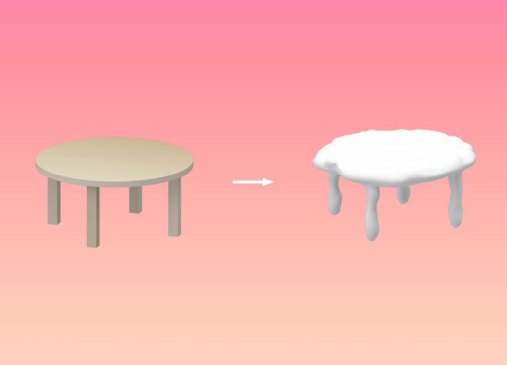
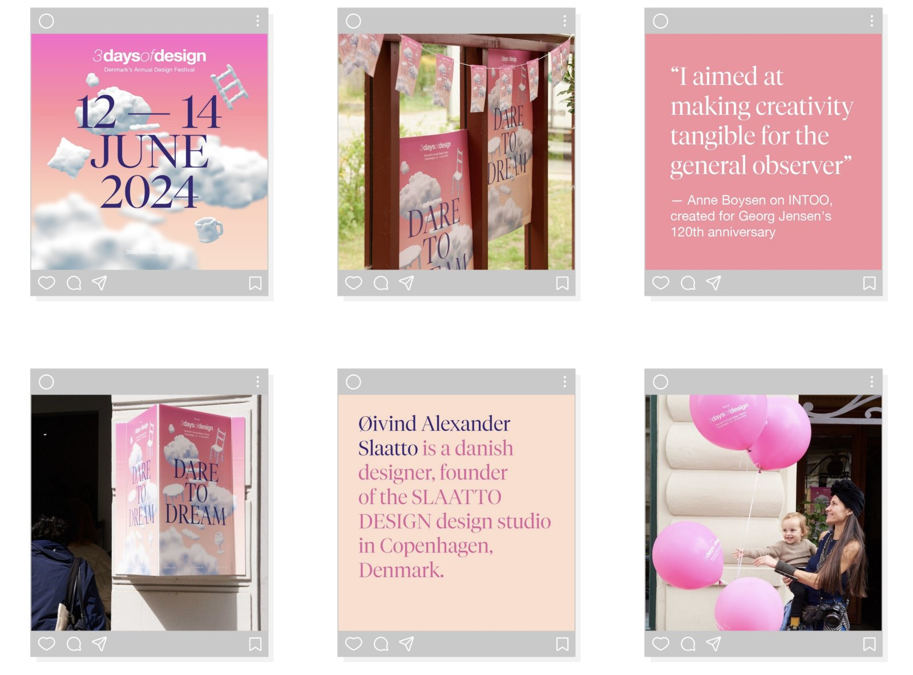
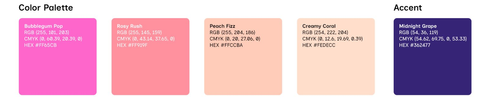
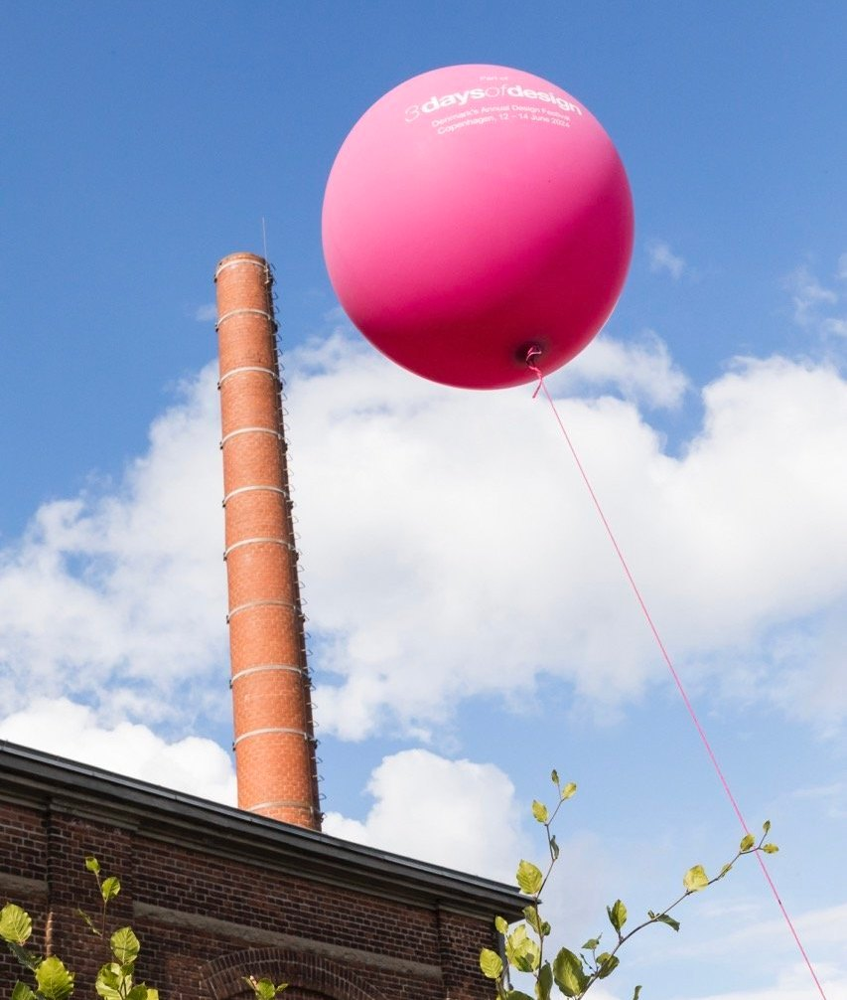
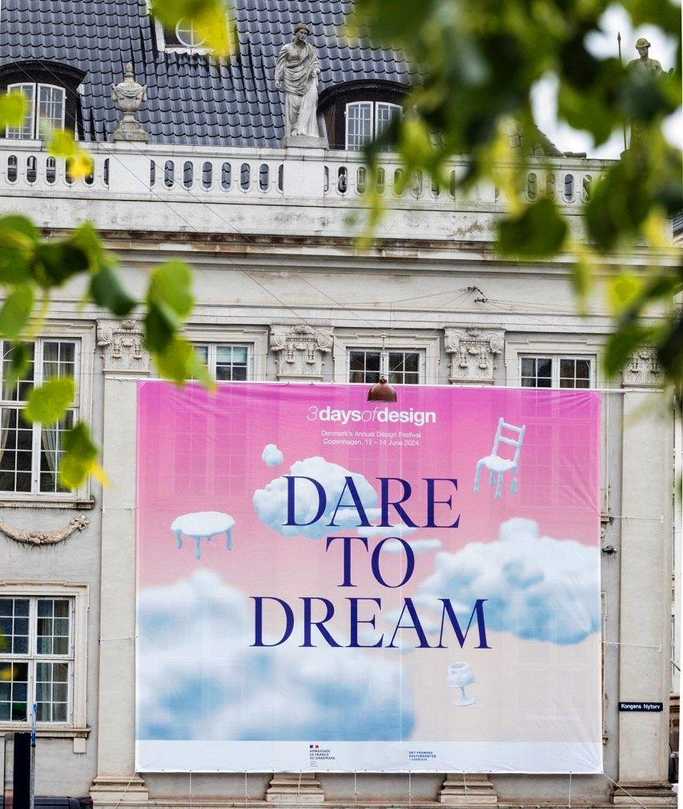
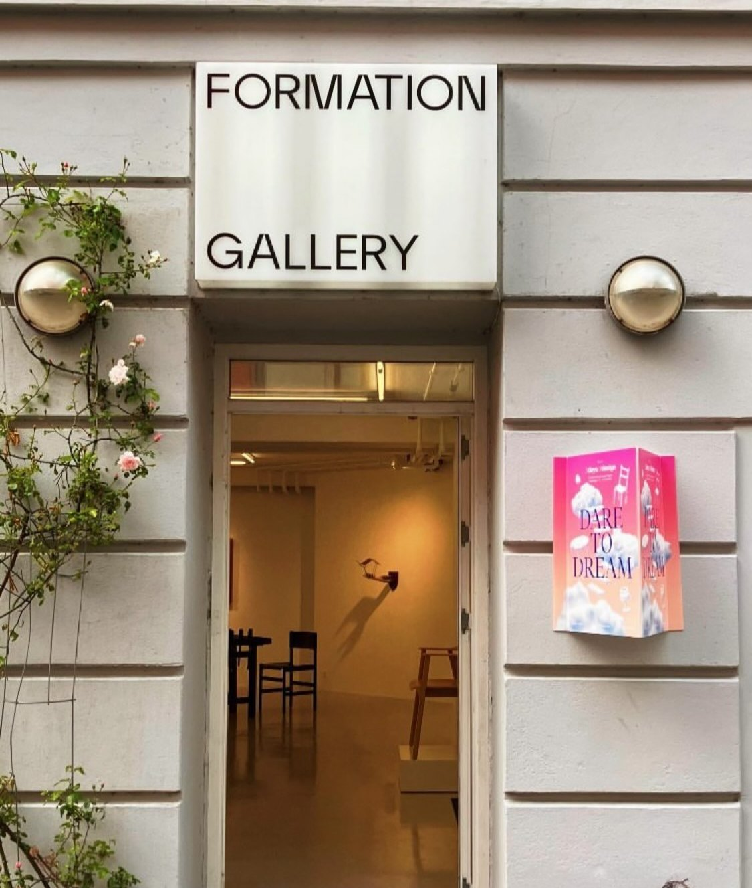
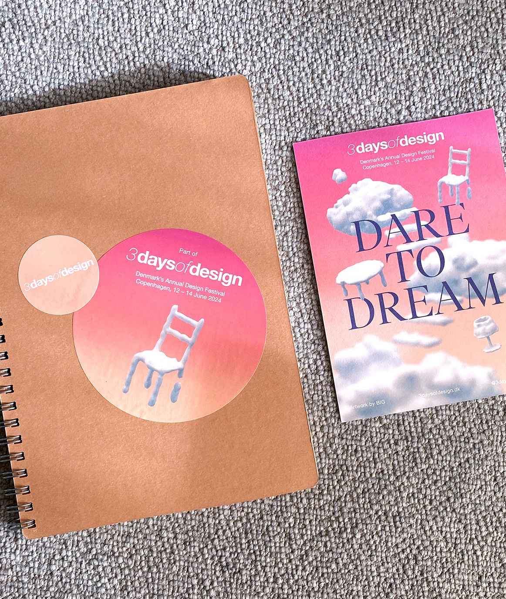